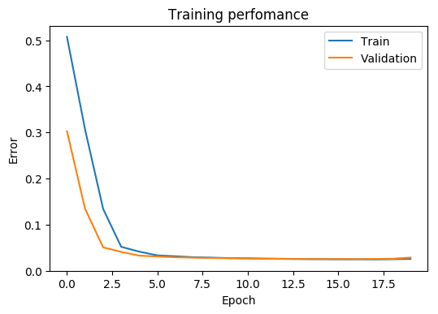

Python 2.7.13 (default, Jan 13 2017, 10:15:16)
Type "copyright", "credits" or "license" for more information.
IPython 5.3.0 -- An enhanced Interactive Python.
? -> Introduction and overview of IPython's features.
%quickref -> Quick reference.
help -> Python's own help system.
object? -> Details about 'object', use 'object??' for extra details.
These commands were executed:
>>> from __future__ import division
>>> from sympy import *
>>> x, y, z, t = symbols('x y z t')
>>> k, m, n = symbols('k m n', integer=True)
>>> f, g, h = symbols('f g h', cls=Function)
Warning: pylab (numpy and matplotlib) and symbolic math (sympy) are both
enabled at the same time. Some pylab functions are going to be overrided by
the sympy module (e.g. plot)
Restarting kernel...
In [1]: run mnist_ptron.py
Main information
[ALGORITHM] Perceptron
[OPTION] verbose = True
[OPTION] epoch_end_signal = None
[OPTION] show_epoch = 1
[OPTION] shuffle_data = False
[OPTION] step = 0.1
[OPTION] train_end_signal = None
[OPTION] error = mse
[THEANO] Initializing Theano variables and functions.
[THEANO] Initialization finished successfully. It took 0.93 seconds
Network's architecture
-----------------------------------------------
| # | Input shape | Layer Type | Output shape |
-----------------------------------------------
| 1 | 784 | Input | 784 |
| 2 | 784 | Step | 10 |
-----------------------------------------------
Start training
[TRAINING DATA] shapes: (60000, 784)
[TEST DATA] shapes: (10000, 784)
[TRAINING] Total epochs: 20
------------------------------------------------
| Epoch # | Train err | Valid err | Time |
------------------------------------------------
| 1 | 0.5073 | 0.3026 | 0.3 sec |
| 2 | 0.3066 | 0.1346 | 0.3 sec |
| 3 | 0.1342 | 0.05086 | 0.3 sec |
| 4 | 0.05199 | 0.04095 | 0.3 sec |
| 5 | 0.04147 | 0.03281 | 0.3 sec |
| 6 | 0.03342 | 0.03097 | 0.3 sec |
| 7 | 0.03147 | 0.02932 | 0.3 sec |
| 8 | 0.02939 | 0.0284 | 0.3 sec |
| 9 | 0.02855 | 0.02778 | 0.3 sec |
| 10 | 0.02742 | 0.02705 | 0.3 sec |
| 11 | 0.02701 | 0.02658 | 0.3 sec |
------------------------------------------------
| Too many outputs in the terminal. Set up |
| logging after each 4 epochs |
------------------------------------------------
| 12 | 0.02626 | 0.02618 | 0.3 sec |
| 16 | 0.02484 | 0.02541 | 0.3 sec |
| 20 | 0.02572 | 0.02863 | 0.3 sec |
------------------------------------------------
precision recall f1-score support
0 0.51 0.99 0.67 936
1 0.95 0.95 0.95 1163
2 0.92 0.85 0.88 982
3 0.91 0.83 0.87 1038
4 0.91 0.88 0.89 948
5 0.91 0.71 0.80 921
6 0.97 0.89 0.93 1013
7 0.96 0.87 0.91 1029
8 0.92 0.70 0.79 978
9 0.88 0.81 0.84 992
avg / total 0.89 0.85 0.86 10000
Validation accuracy: 85.01%
In [2]: plots.error_plot(network)

Out[2]: <matplotlib.axes._subplots.AxesSubplot at 0x7fbbafa255d0>
In [3]: